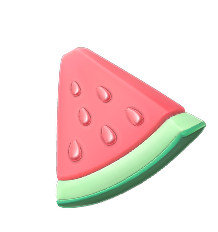
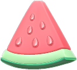
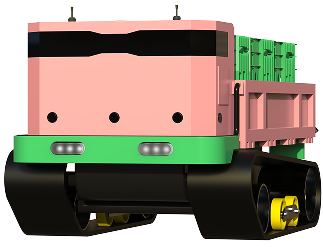

feat.농업 로봇 봇박스
농가상생 프로젝트
고당도 흑수당
최첨단 로봇 '봇박스'가 농가 일손을 돕고,
전국 최고의 과일을 알리는
봇박스 상생 프로젝트 1번!
전국 최고의 과일을 알리는
봇박스 상생 프로젝트 1번!
SCROLL
농가상생 프로젝트,
고당도 흑수박
고당도 흑수박
-
봇박스는 농민을 따라다니며
무거운 수확물 운반을 도와주는 로봇 -
그렇게 만난 농장주들의 공통점
우리 과일이 전국에서 제일 맛있다! -
첨단 기술을 가진 로봇으로 농가 일손도 돕고,
더 많은 사람들에게 소개하여 협력 농가도 살리는봇박스와 농가가 함께 상생하는
그 첫번째 프로젝트, 흑수박
일반 수박과는 다른 고당도,
고식감의 프리미엄 과일
고식감의 프리미엄 과일
아삭한 식감 + 탁월한 보관력
보기에도 먹기에도 특별한 과일

“확실한 수박
당도 차이”
당도 차이”
일반수박보다 단단해서 식감도 좋고,
보관도 용이한 프리미엄 수박
보관도 용이한 프리미엄 수박
한눈에 보는 수박 당도 등급
365일 평균 13brix 이상으로
시중 수박보다 당도가 1~2 brix 더 UP
시중 수박보다 당도가 1~2 brix 더 UP
일반 수박 : 10 브릭스
콜라 : 10.6 브릭스
고당도 흑수박 :
최소12 브릭스 이상
최소12 브릭스 이상

한입만 먹어도 ‘꿀 수박’ 이라는
말이 나오는 단맛!
말이 나오는 단맛!
정성의 농사, 타이밍의 수박
“수박은 타이밍입니다.”
흑수박은 5월 말부터 6월 중순까지가 가장 맛있는 시기입니다.
매일 아침 수확 후 가장 잘 익은 개체만 선별해 당일 포장, 당일 발송합니다.
매일 아침 수확 후 가장 잘 익은 개체만 선별해 당일 포장, 당일 발송합니다.
가장 맛있는 순간에, 가장 맛있는 흑수박을 보내드립니다.
5월 26일부터 6월 20일까지 순차적 발송
경험과 기술, 두 세대가 함께 키운 수박
평생 수박을 키워오신 아버지의 노하우와 젊은 청년의
기술이 만나 가장 맛있는 수박을 키우고 있습니다
기술이 만나 가장 맛있는 수박을 키우고 있습니다
평생 수박을 키워온 농부의 손
흑수박이 자라는 농장은 30년 경력의 수박 장인이 운영합니다.
날씨의 흐름, 토양의 컨디션, 수확 타이밍까지…
수박을 가장 잘 아는 사람의 손에서 기초가 다져집니다.
날씨의 흐름, 토양의 컨디션, 수확 타이밍까지…
수박을 가장 잘 아는 사람의 손에서 기초가 다져집니다.

청년 농부의 새로운 시선
그 아들의 세대는 스마트 농업 기술과 정밀 재배법으로 더 나아갑니다.
토양 수분, 온도, 햇빛까지 센서로 관리하며
수박 한 통 한 통이 최고 상태일 때 수확합니다.
토양 수분, 온도, 햇빛까지 센서로 관리하며
수박 한 통 한 통이 최고 상태일 때 수확합니다.
“맛있고, 특별하고, 정성스러운 만큼…
가격도 솔직합니다.”
가격도 솔직합니다.”
프리미엄 고당도 흑수박 7kg
13브릭스 이상 고당도 흑수박
단단한 식감, 높은 보관성
정성껏 선별 & 당일 포장 발송
가격
38,000
(배송료 포함)
포장도 정성스럽고 깔끔하게 준비했습니다.
특별한 흑수박으로, 소중한 분께 감사의 마음을 전해보세요.
원래 흑수박은 선물용 프리미엄 과일로 사랑받고 있습니다.
원래 흑수박은 선물용 프리미엄 과일로 사랑받고 있습니다.
선물용으로 딱 !
지금 구매하기
흑수박 주문하기
" class="arrow"/>
지금 구매하기
첨단 로봇 봇박스로 일손 돕고
농가도 살리는데 동참해주세요.
농가도 살리는데 동참해주세요.
혹시 주변에서 수확을 돕고 싶은 과수원 가족이 있나요?
농번기, 가장 바쁠 때 1주일씩 렌탈 신청해주시면
봇박스가 직접 찾아갑니다.
봇박스가 직접 찾아갑니다.

2주 이상 렌탈시
무료배송
무료배송